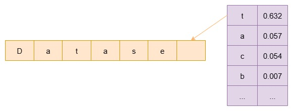
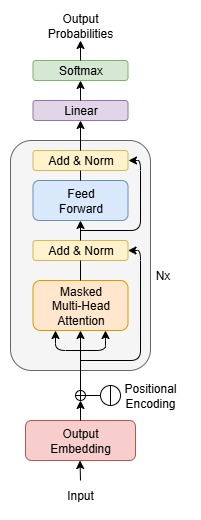
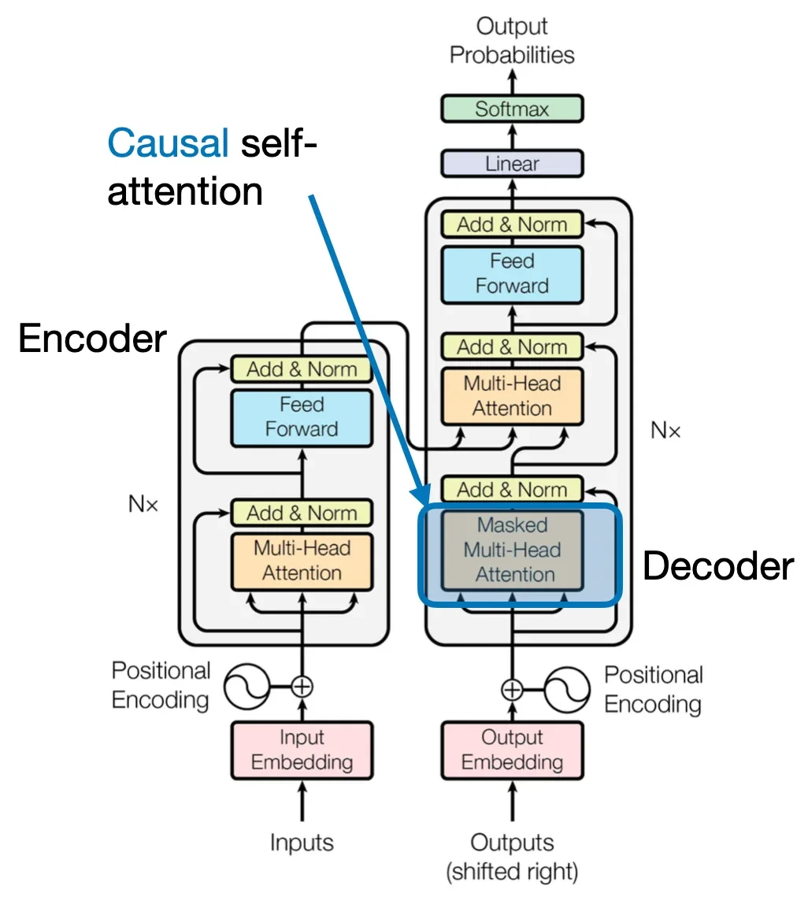

5.5 nanoGPT
The simplest, fastest repository for training/finetuning medium-sized GPTs.
Created Date: 2025-08-12
If you're curious about how AI products like ChatGPT work, this tutorial is for you. We'll start from the very beginning, and all you need is a solid grasp of the Python language. Any other concepts will be referenced as we go. Most importantly, we'll be studying the nanoGPT library, an excellent resource for learning how to build large language models from scratch, which was written by the renowned AI educator Andrej Karpathy.
nanoGPT is the simplest, fastest repository for training/finetuning medium-sized GPTs. It is a rewrite of minGPT that prioritizes teeth over education. Still under active development, but currently the file train.py reproduces GPT-2 (124M) on OpenWebText, running on a single 8XA100 40GB node in about 4 days of training. The code itself is plain and readable: train.py is a ~300-line boilerplate training loop and model.py a ~300-line GPT model definition, which can optionally load the GPT-2 weights from OpenAI. That's it.
Figure 1 - The Different Between nanoGPT and ChatGPT
The tutorial is split into two phases. In the first phase, we'll write a character-level generative model from scratch, using Shakespeare's complete works as our training data. This will result in a model that can write in the style of Shakespeare. The second phase involves running a pre-trained GPT model. We won't train it ourselves, as that's too computationally expensive for a personal computer. Instead, we'll download its pre-trained parameters to run inference, and we'll also have the option to finetune it.
5.5.1 Character-Level GPT
If you are not a deep learning professional and you just want to feel the magic and get your feet wet, the fastest way to get started is to train a character-level GPT on the works of Shakespeare.
5.5.1.1 Shakespeare Dataset
William Shakespeare was an English playwright, poet and actor. He is widely regarded as the greatest writer in the English language and the world's pre-eminent dramatist.
The training text is a collection of excerpts from several of Shakespeare's classic plays, mainly including the following works:
Coriolanus: Accounting for the largest proportion, it presents the complete tragic arc of the protagonist Caius Marcius (later known as Coriolanus) – from a Roman hero to being exiled, eventually allying with former enemies, and finally abandoning his revenge due to his mother's persuasion. It involves class conflicts, personal honor, and power struggles.
Richard III: It tells the story of Richard III's conspiracies and rule, including his usurpation of the throne, elimination of political opponents, and eventual downfall, demonstrating the desire for power and the distortion of human nature.
Richard II: Centering on the overthrow of Richard II by Henry Bolingbroke (later Henry IV), it explores the themes of the legitimacy of royal power and betrayal.
Here is a small excerpt from Coriolanus:
First Citizen: Before we proceed any further, hear me speak. All: Speak, speak. First Citizen: You are all resolved rather to die than to famish? All: Resolved. resolved. First Citizen: First, you know Caius Marcius is chief enemy to the people. All: We know't, we know't.
File shakespeare_char.py download the input.txt to local data/ directory, and read it in code:
data_dir = os.path.join(os.path.dirname(__file__), "data")
os.makedirs(data_dir, exist_ok=True)
input_file_path = os.path.join(data_dir, "input.txt")
# download the tiny shakespeare dataset
if not os.path.exists(input_file_path):
with open(input_file_path, "w") as f:
f.write(requests.get(data_url).text)
with open(input_file_path, "r") as f:
data = f.read()
print("Length of dataset in characters:", len(data))Length of dataset in characters: 1115394
Get all the unique characters that occur in this text:
chars = sorted(list(set(data)))
vocab_size = len(chars)
print("All the unique characters:", "".join(chars))
print(f"Vocab size: {vocab_size}")All the unique characters: !$&',-.3:;?ABCDEFGHIJKLMNOPQRSTUVWXYZabcdefghijklmnopqrstuvwxyz Vocab size: 65
The vocab chars contains the entire character for our generative model. Predicting the next character means computing the probability of every character in this vocabulary, and then selecting the one with the highest probability to be the predicted output.

Figure 2 - Predict Next Word
# create a mapping from characters to integers
stoi = {ch: i for i, ch in enumerate(chars)}
itos = {i: ch for i, ch in enumerate(chars)}
print(stoi){'\n': 0, ' ': 1, '!': 2, '$': 3, '&': 4, "'": 5, ',': 6, '-': 7, '.': 8, '3': 9, ':': 10, ';': 11, '?': 12, 'A': 13, 'B': 14, 'C': 15, 'D': 16, 'E': 17, 'F': 18, 'G': 19, 'H': 20, 'I': 21, 'J': 22, 'K': 23, 'L': 24, 'M': 25, 'N': 26, 'O': 27, 'P': 28, 'Q': 29, 'R': 30, 'S': 31, 'T': 32, 'U': 33, 'V': 34, 'W': 35, 'X': 36, 'Y': 37, 'Z': 38, 'a': 39, 'b': 40, 'c': 41, 'd': 42, 'e': 43, 'f': 44, 'g': 45, 'h': 46, 'i': 47, 'j': 48, 'k': 49, 'l': 50, 'm': 51, 'n': 52, 'o': 53, 'p': 54, 'q': 55, 'r': 56, 's': 57, 't': 58, 'u': 59, 'v': 60, 'w': 61, 'x': 62, 'y': 63, 'z': 64}
Why do we need to tokenize? It's because machines can only process numbers, while words and text are abstractions created by humans. Tokenization is the process of converting these human abstractions into a numerical format that a machine can understand and work with. Therefore, we've defined the encode and decode functions to act as a bridge between humans and machines:
def encode(s):
# encoder: take a string, output a list of integers
return [stoi[c] for c in s]
def decode(l):
# decoder: take a list integers, output a string
return ''.join([itos[i] for i in l])Convert the text Hello, World! into tokens. In this case, each character is a token. The encode function maps each character to a unique integer ID. For example, 'H' might become 12, 'e' might become 5, and so on. We can use the decode function to perform the reverse operation: converting a list of numerical tokens back into human-readable text.
sample_text = 'Hello, World!'
print('Tokenize', encode(sample_text))
print('Decode:', decode(encode(sample_text)))Tokenize [20, 43, 50, 50, 53, 6, 1, 35, 53, 56, 50, 42, 2] Decode: Hello, World!
Use Python's slicing method to split our data into two categories: a training set (90%) and a validation set (10%). The training set is used to teach the model, while the validation set is used to evaluate its performance.
# create the train and val splits
n = len(data)
train_data = data[:int(n*0.9)]
val_data = data[int(n*0.9):]
# encode both to integers
train_ids = encode(train_data)
val_ids = encode(val_data)
print(f'Train has {len(train_ids)} tokens')
print(f'Val has {len(val_ids)} tokens')Train has 1003854 tokens Val has 111540 tokens
Save train_ids and val_ids in this binary format makes them much faster to load later when the training process begins:
# export to bin files
train_ids = numpy.array(train_ids, dtype=numpy.uint16)
val_ids = numpy.array(val_ids, dtype=numpy.uint16)
train_ids.tofile(os.path.join(data_dir, "train.bin"))
val_ids.tofile(os.path.join(data_dir, "val.bin"))Save the meta information as well, to help us encode/decode later:
meta = {
"vocab_size": vocab_size,
"itos": itos,
"stoi": stoi,
}
with open(os.path.join(data_dir, "meta.pkl"), "wb") as f:
pickle.dump(meta, f)5.5.1.2 Model Architecture
This section will be quite long and requires a lot of prerequisite knowledge, such as an understanding of attention mechanisms and the Transformer architecture. If these concepts are new to you, I highly recommend reading my other detailed articles on these topics, as they are crucial for understanding GPT.
Decoder Only
A GPT decoder-only model is a type of Transformer architecture (Figure 4) , as the name suggests, only uses the decoder portion of the original Transformer model. Unlike the original encoder-decoder model, which has separate components for processing the input (encoder) and generating the output (decoder), a decoder-only model combines these two functions into a single unit. This architecture is particularly well-suited for text generation tasks, as it is designed to predict the next word or token in a sequence. ChatGPT and other large language models (LLMs) are prime examples of this architecture.
While removing the encoder, the cross attention in the decoder is also removed. Therefore, the architecture of GPT becomes very simple, as shown below:

Figure 3 - GPT Architecture
Embedding , softmax , linear layer and Residual network as mentioned in the previous tutorial, the attention module will be covered in the next section. File train.py implements the architecture, let's break this down into a few parts.
Here is a every common multilayer perceptron (MLP) , it's composed mainly of two symmetric torch.nn.Linear :
class MLP(torch.nn.Module):
def __init__(self, config):
super().__init__()
self.c_fc = torch.nn.Linear(config.n_embd, 4 * config.n_embd, bias=config.bias)
self.gelu = torch.nn.GELU()
self.c_proj = torch.nn.Linear(
4 * config.n_embd, config.n_embd, bias=config.bias
)
self.dropout = torch.nn.Dropout(config.dropout)
def forward(self, x):
x = self.c_fc(x)
x = self.gelu(x)
x = self.c_proj(x)
x = self.dropout(x)
return xThe Block is the core of GPT , mainly include a CausalSelfAttention and a MLP. Additionally, it includes two residual networks and torch.nn.LayerNorm :
class Block(torch.nn.Module):
def __init__(self, config):
super().__init__()
self.ln_1 = torch.nn.LayerNorm(config.n_embd, bias=config.bias)
self.attn = CausalSelfAttention(config)
self.ln_2 = torch.nn.LayerNorm(config.n_embd, bias=config.bias)
self.mlp = MLP(config)
def forward(self, x):
x = x + self.attn(self.ln_1(x))
x = x + self.mlp(self.ln_2(x))
return xParameters
Before we dive into the deep code details, let's first go over the initial parameters of the system:
@dataclass
class GPTConfig:
block_size: int = 1024
# GPT-2 vocab_size of 50257, padded up to nearest multiple of 64 (50304) for efficiency.
# For our simple character GPT, 128 enough.
vocab_size: int = (128)
n_layer: int = 12
n_head: int = 12
n_embd: int = 768
dropout: float = 0.0
# True: bias in Linears and LayerNorms, like GPT-2. False: a bit better and faster
bias: bool = (True)Here are the parameters defined in the GPTConfig class:
block_size: This is the maximum context length or the number of tokens the model can look back at to make a prediction. A value of 1024 is standard for many models, but it can be adjusted depending on the task and available memory.vocab_size: This specifies the size of the vocabulary, which is the total number of unique tokens the model can understand. For the character-level GPT, 128 is sufficient to cover all standard ASCII characters. GPT-2, for example, has a much larger vocabulary of 50,257.n_layer: This is the number of transformer blocks (or layers) stacked on top of each other. More layers allow the model to learn more complex patterns but also increase computational cost. A value of 12 is a common choice for smaller models.n_head: This is the number of attention heads in the multi-head attention mechanism. Each head can learn different aspects of the input sequence. A value of 12 means the model will split the embedding dimension into 12 parts and apply attention to each part independently.n_embd: This is the size of the embedding dimension. It represents the size of the vector used to represent each token in the model. A larger embedding dimension allows for a richer representation of each token's meaning.dropout: This is a regularization technique used to prevent overfitting. It sets a fraction of the layer's inputs to zero during training. A dropout rate of 0.0 means no dropout is applied.bias: This is a boolean flag that determines whether a bias term is used in the linear layers and LayerNorms. The original GPT-2 used a bias, but setting it to False can sometimes lead to slightly better performance and faster training.
Causal Self Attention
Causal self-attention is a specific type of self-attention mechanism used in transformer models, particularly for tasks like text generation. Unlike standard self-attention, which allows a token to attend to all other tokens in a sequence, causal self-attention enforces a crucial constraint: a token can only attend to the tokens that come before it in the sequence, and not to the tokens that come after.

Figure 4 - Casual Self Attention
This "causal" or "masked" approach is essential for autoregressive models like those used in large language models (LLMs) that predict the next word in a sequence. By preventing a model from "cheating" and looking ahead at future words, it ensures that the prediction for each position is based solely on the preceding context.
This is typically implemented by applying a mask to the attention weights, which effectively sets the attention scores for future tokens to negative infinity before applying the softmax function, making their contribution zero.
class CausalSelfAttention(torch.nn.Module):
def __init__(self, config):
super().__init__()
assert config.n_embd % config.n_head == 0
# key, query, value projections for all heads, but in a batch
self.c_attn = torch.nn.Linear(
config.n_embd, 3 * config.n_embd, bias=config.bias
)
# output projection
self.c_proj = torch.nn.Linear(config.n_embd, config.n_embd, bias=config.bias)
# regularization
self.attn_dropout = torch.nn.Dropout(config.dropout)
self.resid_dropout = torch.nn.Dropout(config.dropout)
self.n_head = config.n_head
self.n_embd = config.n_embd
self.dropout = config.dropout
# flash attention make GPU go brrrrr but support is only in PyTorch >= 2.0
self.flash = hasattr(torch.nn.functional, "scaled_dot_product_attention")
if not self.flash:
print(
"WARNING: using slow attention. Flash Attention requires PyTorch >= 2.0"
)
# causal mask to ensure that attention is only applied to the left in the input sequence
self.register_buffer(
"bias",
torch.tril(torch.ones(config.block_size, config.block_size)).view(
1, 1, config.block_size, config.block_size
),
)
def forward(self, x):
B, T, C = (
x.size()
) # batch size, sequence length, embedding dimensionality (n_embd)
# calculate query, key, values for all heads in batch and move head forward to be the batch dim
q, k, v = self.c_attn(x).split(self.n_embd, dim=2)
# (B, nh, T, hs)
k = k.view(B, T, self.n_head, C // self.n_head).transpose(1, 2)
# (B, nh, T, hs)
q = q.view(B, T, self.n_head, C // self.n_head).transpose(1, 2)
# (B, nh, T, hs)
v = v.view(B, T, self.n_head, C // self.n_head).transpose(1, 2)
# causal self-attention; Self-attend: (B, nh, T, hs) x (B, nh, hs, T) -> (B, nh, T, T)
if self.flash:
# efficient attention using Flash Attention CUDA kernels
y = torch.nn.functional.scaled_dot_product_attention(
q,
k,
v,
attn_mask=None,
dropout_p=self.dropout if self.training else 0,
is_causal=True,
)
else:
# manual implementation of attention
att = (q @ k.transpose(-2, -1)) * (1.0 / math.sqrt(k.size(-1)))
att = att.masked_fill(self.bias[:, :, :T, :T] == 0, float("-inf"))
att = torch.nn.functional.softmax(att, dim=-1)
att = self.attn_dropout(att)
y = att @ v # (B, nh, T, T) x (B, nh, T, hs) -> (B, nh, T, hs)
# re-assemble all head outputs side by side
y = y.transpose(1, 2).contiguous().view(B, T, C)
# output projection
y = self.resid_dropout(self.c_proj(y))
return yWe can understand the code by reading it line by line.
GPT Struct
5.5.1.3 Training
5.5.1.4 Inference
5.5.2 Reproducing GPT-2
In February 14, 2019, OpenAI release GPT-2, it was trained simply to predict the next word in 40GB of Internet text. GPT‑2 is a large transformer(opens in a new window)-based language model with 1.5 billion parameters, trained on a dataset of 8 million web pages. GPT‑2 is trained with a simple objective: predict the next word, given all of the previous words within some text. The diversity of the dataset causes this simple goal to contain naturally occurring demonstrations of many tasks across diverse domains. GPT‑2 is a direct scale-up of GPT, with more than 10X the parameters and trained on more than 10X the amount of data.
You can read their paper Language Models are Unsupervised Multitask Learners for more information.